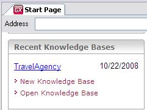

The purpose is to enable opening an existing Knowledge Base. A dialog to select a Knowledge Base folder will be displayed. ShortcutsCtrl+Shift+O and Open Knowledge Base option in the Recent Knowledge Bases dialog container.  See alsoHowTo: Creating a KB From a .MDF
|